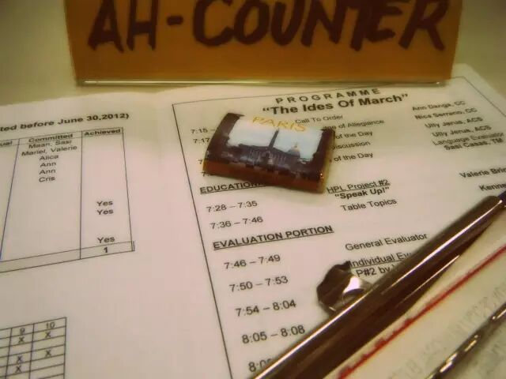
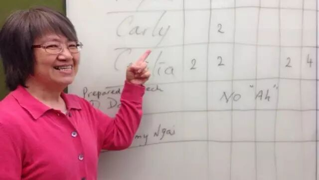
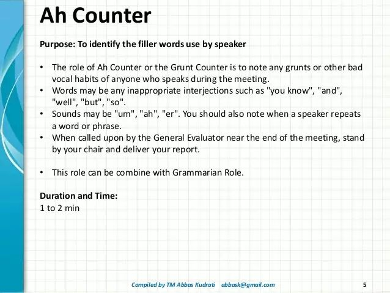

关键词：Ah-Counter是干嘛的

Ah-Counter是为了帮助演讲者提高演讲水平的，基本职责是记录并报告演讲人在演讲的过程中的一些赘词或不很必要的嗯和啊（比如，过多的使用：ah,well,and,um,er,you know说等词）
关键词：Ah-Counter会议前准备

（1）角色说明。准备一个简短的角色说明。介绍总点评官在会议中的职能。如果是第一次做时间官，可以与Mentor核对确认角色说明，并可做事先排练。
推荐：在介绍规则时可把具体的“赘语”形象地展示一下。
关键词：Ah-Counter会议中的介绍流程

第1步：会议开始主席上台伊始，就认真聆听演讲人的哼哈使用情况，正确地记录使用频率。
第2步：在被总点评官邀请上台介绍时，引出简短的角色说明，并可适当提醒各位演讲人如何避免在演讲过程中出现哼哈。自己上台时，可以请事先确定的助手作相应记录。
第3步：在总评阶段，由GE邀请上台，给出详细点评报告。在报告时可分类：赘语次数少于3次的，没有赘语的，以及赘语次数特别多的（可封以Ah-King/Ah-Queen称号）。对于常犯的赘语词可在现场或者会后给予演讲人提醒。

看了我们的介绍有没有对Ah-Counter的职责和工作流程清晰起来呢？欢迎大家来北航头马俱乐部体验一下哼哈官哦！同时，欢迎加入我们北航Toastmaster俱乐部成为我们的会员哦！成为我们的会员要满足3+2+1的要求，即：参加3次例会；完成2次即兴演讲；申请并做1次入会演讲（1-2分钟自我介绍+2分钟问答）。会员投票通过后，即可办理入会手续，具体可以咨询我们的VPM。
我们的时间是每周五晚19:30-21:30（联合会议除外），地点是北航新主楼某教室，我们和你不见不散哦～

https://mp.weixin.qq.com/s/m3Bgew9JeIu2zafCVMBThQ
本页为抢救式本地归档，图文已永久保存。